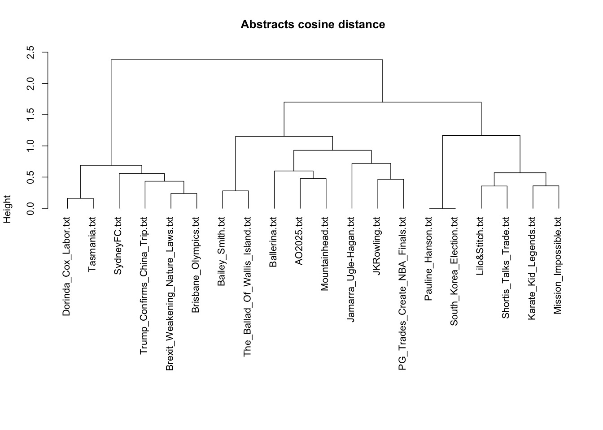
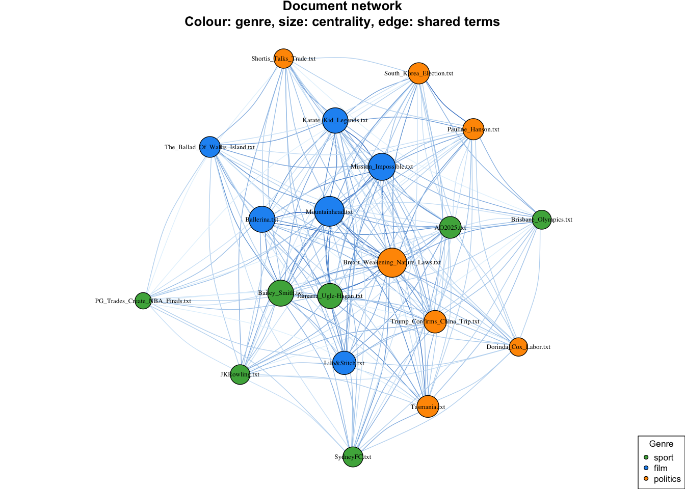
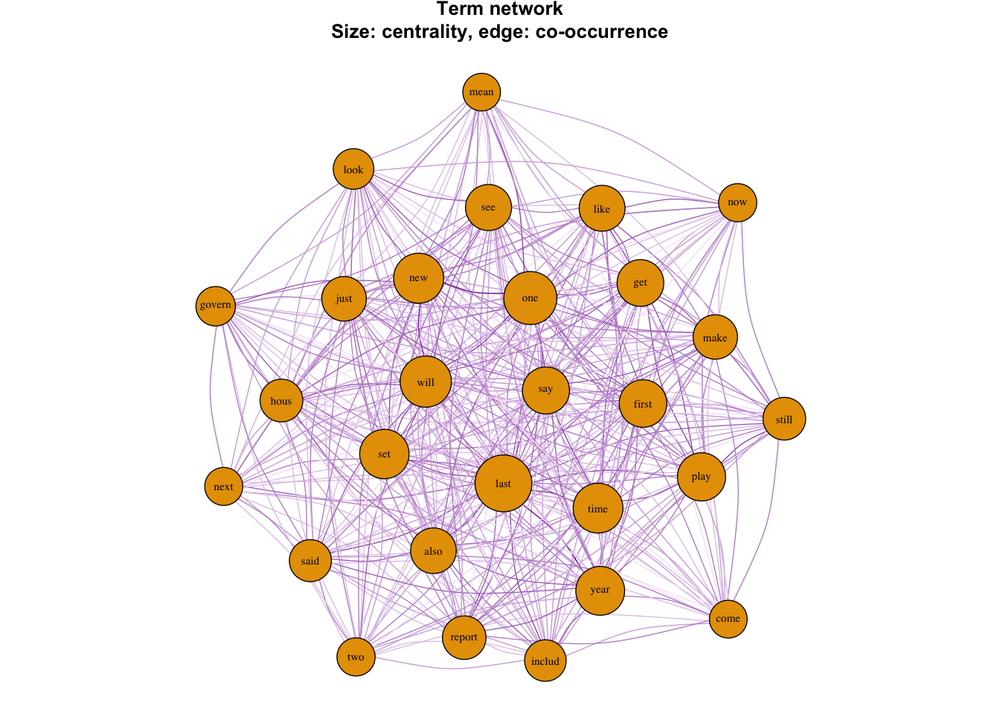
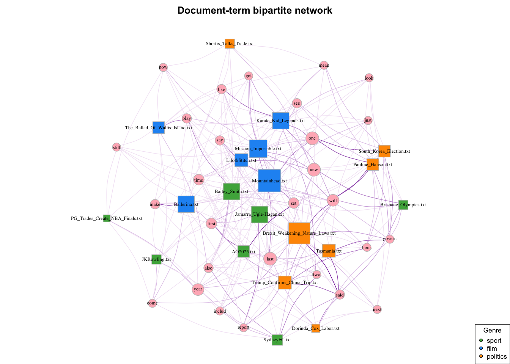
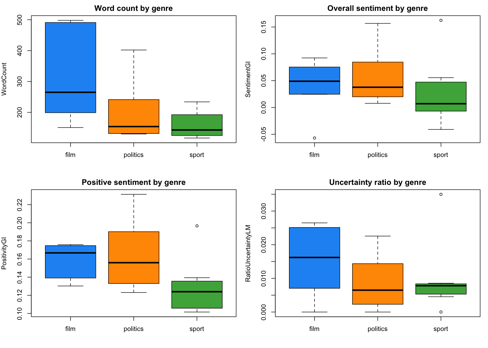

Can word frequencies alone tell sport from politics?
The question
Given only the words a news article uses - no author, no section, no tags - can you work out what kind of article it is? I built a corpus of 20 articles across three genres (sport, film, politics) and tested whether unsupervised methods could recover those genre labels from term frequencies alone. The labels were held back and used only to score the result.
Data and cleaning
The corpus is 20 news articles published between November 2024 and June 2025, drawn from the BBC, the Guardian, ABC News, news.com.au, ESPN, Variety, Time Out and The Conversation. Each was saved as a plain text file named for its subject, giving a roughly even split: 7 sport, 6 film, 7 politics.
Preprocessing followed the standard tm pipeline - strip numbers and punctuation, lowercase, drop English stopwords, collapse whitespace, then stem with Snowball. Three tokens survived and had to be removed by hand: the en dash, the opening curly quote, and the possessive 's. All three are non-ASCII, so removePunctuation never touched them - a reminder that a textbook pipeline will not match real scraped text without inspection.
The document term matrix was then trimmed with removeSparseTerms(sparse = 0.7), leaving 20 documents by 28 terms. That threshold is aggressive: it keeps only terms appearing in at least 30% of documents, which makes the matrix small enough to visualise but also, as it turns out, strips most of the genre-specific vocabulary.
Method, and why this one
Hierarchical clustering on cosine distance, with Ward linkage. Cosine rather than Euclidean because these documents differ substantially in length - the film reviews run to nearly 500 words while several sport pieces are under 150. On raw counts, Euclidean distance would read that length gap as topical difference and cluster long documents with long documents. Cosine normalises it away by comparing direction rather than magnitude.
I then cut the tree at k=3 to match the three known genres, and separately built two co-occurrence networks from the binary document-term matrix: one linking documents that share terms, one linking terms that share documents. Eigenvector centrality on each identified the structurally important nodes.
Clustering gave a single hard label per document. The network showed that several documents genuinely sit between genres - which is the more honest description of what modern journalism looks like.
Findings
Clustering recovered the genre labels for 12 of 20 documents, or 60% accuracy against a 33% baseline. Better than chance, but a long way from reliable.

The errors are informative rather than random. The Brisbane Olympics article is labelled sport but landed in politics - it is largely about Queensland government funding. The Sydney FC piece is a sports story about a chairman appointment, and shares governance vocabulary with political reporting. Three political articles landed in the film cluster, all beside action films whose reviews borrow the language of conflict.
The document network makes the overlap visible in a way the dendrogram cannot.

Five of the six film articles rank among the most central documents - an artefact worth naming, since film reviews are the longest documents here and so carry more of the surviving high-frequency terms. Centrality is partly measuring length.
The token network explains the 60% ceiling directly.

Nothing there distinguishes a film review from an election report. The sparsity threshold kept the terms appearing everywhere, which is exactly the set that separates nothing - the clustering was working from vocabulary whose signal had already been filtered out.
Only the bipartite view shows genre structure cleanly, because it keeps the document-term attachments instead of collapsing them into one projection.

Sentiment analysis was a secondary check, and it found nothing. Across nine two-sided t-tests - overall sentiment, positivity and uncertainty, each across all three genre pairs - not one reached p < 0.05, before or after correction. Sport scores lowest on positivity descriptively, but at n = 20 that gap is not distinguishable from noise.

The tempting version of this result is available, which is worth being precise about. Test one-sided in the direction the boxplots already suggest and film beats sport on positivity at p = 0.037 - a hypothesis chosen after seeing the data, the only one of nine comparisons to clear the line, and it does not survive Bonferroni correction. Two-sided is the honest test here.
Assumptions and limitations
The honest summary is that this shows the method working, not a result worth trusting.
- n = 20 is far too small. With 6 to 7 documents per genre the t-tests have almost no power, which is the most likely reason none of them detect anything. A null result at this sample size is not evidence that the genres have similar sentiment - it is mostly evidence that the design cannot tell.
- The corpus is not a random sample. I chose the articles myself, so my own sense of a typical sport or film piece is baked into both sample and labels.
- Genre labels are my own judgement. Misclassifications concentrate in documents that genuinely span topics, so part of the 40% error is disagreement about the label rather than failure of the clustering.
- k=3 was imposed, not discovered. I cut the tree at the number of genres I already knew, and did not check whether the dendrogram supports three clusters.
- Centrality is confounded with document length, which I did not normalise for. That film articles are central is partly a finding that they are long.
sparse = 0.7was tuned for legible networks, not for accuracy. It removed the genre-specific vocabulary the task needed, and is the most likely cause of the 60% ceiling. I did not test other thresholds.- Stemming is lossy and was not validated. Snowball produces
hous,includ,govern; I did not check what it merged.
What this does not license: any claim about news genres in general, or that 60% is the achievable accuracy here. A larger corpus with a tuned sparsity threshold would almost certainly do better.
Reproducing this
Written in R with tm, SnowballC, SentimentAnalysis, proxy and igraph, as four sequential scripts in the code repo.
The corpus is 20 copyrighted news articles and is not redistributed, but the derived document-term matrix is - so the clustering and all three network figures reproduce from the repo alone, with no corpus needed. SOURCES.md lists every article URL if you want to rebuild it and re-run the sentiment step. The layout seed is fixed, so the network figures come out identical.